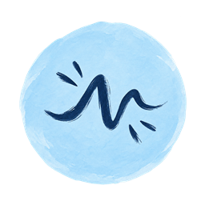
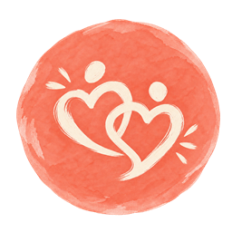
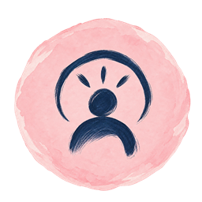

Emocje i napięcie
Lęk, złość, przeciążenie i reakcje, które trudno zrozumieć.
Pomagam lepiej rozumieć siebie, swoje emocje i relacje — szczególnie wtedy, gdy trudno poukładać to, co dzieje się na co dzień.
Natalia Kawalec
psycholog

Lęk, złość, przeciążenie i reakcje, które trudno zrozumieć.

Bliskość, konflikty, granice i mówienie o swoich potrzebach.
Nowy etap, trudna decyzja lub sytuacja, której nie wybierasz.

Własne schematy, wybory i to, co jest dla Ciebie ważne.
Współpraca
Każda historia ma swój kontekst. Zaczynam od wysłuchania Twojej.
Spotkania